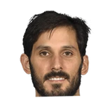
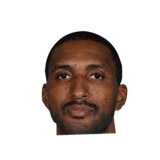

“Kevin (Pritchard) I’ve known forever and (general manger) Chad (Buchanan) too. They’re two of the best guys with no egos and that’s Indiana people in general.“The front office is small and they’re very collaborative. So I’m just here to learn and to help where I can — just from the agent side and 15 years of doing that and looking at things in a different way. But these guys are the experts. I’m just really here to help when they need it and learn the other side of the business.”
What Happy Walters has said about other NBA players and coaches
4 quotes from Happy Walters about 4 other people around the NBA, newest first. Each one links to its original source.
Best quotes
CEO and agent at RSG Happy Walters told Sportando,
“Omri told us he wants to sign with us, but hasn't actually signed yet. We are excited to work with him. Casspi is having a good season and we will do some good things with him off the court.”
“Rod and Shareef are good guys and want this to work well and I believe that it will be as good as it can be,”
Happy Walters on Shareef Abdur-RahimTrueHoop
Quotes per season
Happy Walters talks most about
- Kevin Pritchard1 quote
 Nerlens Noel1 quote
Nerlens Noel1 quote
Omri Casspi1 quote
Shareef Abdur-Rahim1 quote
2021-22
1 quote“Kevin (Pritchard) I’ve known forever and (general manger) Chad (Buchanan) too. They’re two of the best guys with no egos and that’s Indiana people in general.“The front office is small and they’re very collaborative. So I’m just here to learn and to help where I can — just from the agent side and 15 years of doing that and looking at things in a different way. But these guys are the experts. I’m just really here to help when they need it and learn the other side of the business.”
2020-21
1 quote“Rod and Shareef are good guys and want this to work well and I believe that it will be as good as it can be,”
Happy Walters on Shareef Abdur-RahimTrueHoop
2017-18
1 quote“Nerlens loves Dallas and spent June there working out, but we're still waiting on a serious offer.”
2013-14
1 quoteCEO and agent at RSG Happy Walters told Sportando,
“Omri told us he wants to sign with us, but hasn't actually signed yet. We are excited to work with him. Casspi is having a good season and we will do some good things with him off the court.”